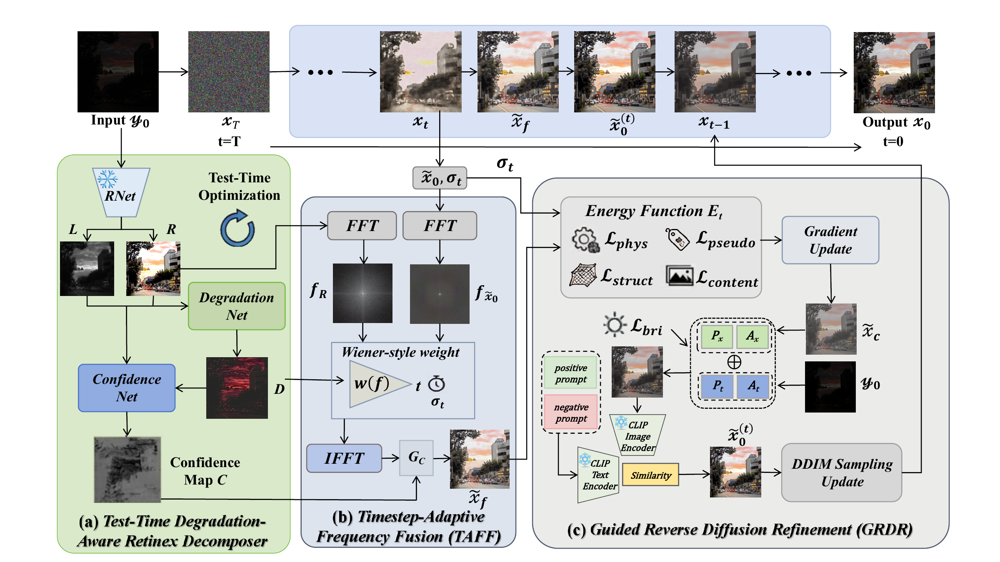
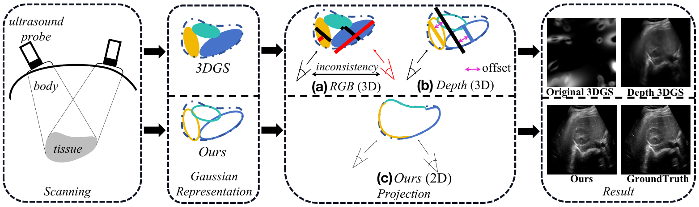
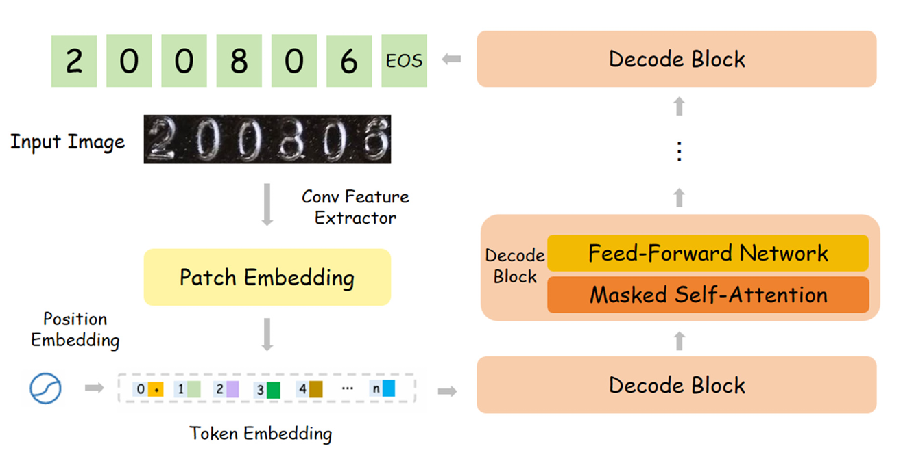

👨🎓 About Me
I’m currently pursuing my Master’s degree at the School of Computer Science, Northwestern Polytechnical University, under the supervision of Prof. Zhaowen Liu. Previously, I received my B.Eng. degree in Artificial Intelligence from the School of Artificial Intelligence, Anhui University, supervised by Prof. Xingbo Dong.
My research interests include:
- Multi-Modal Learning
- Low-Level Vision & Image Restoration
- Brain Data Computing & Neural Decoding
🔥 News
- 2026.09 One first-author paper on low-light image enhancement, DARD, was accepted by IEEE TCSVT (CCF-B, Top journal on video processing).
- 2026.05 One first-author paper on event-guided low-light image enhancement, EvRWKV, was accepted by IEEE TCSVT (CCF-B, Top journal on video processing).
- 2026.04 Our paper on ultrasound novel view synthesis, UltraGS, was accepted by ICME 2026 (CCF-B).
- 2025.08 One co-first-author paper on industrial optical character recognition, DITOCR, was accepted by AIEA 2025 (EI conference).
- 2025.08 Our paper on vision-language anomaly detection, FiLo-SFD, was accepted by AIEA 2025 (EI conference).
🔬 Researches
Google Scholar ↗
DARD: Zero-Shot Degradation-Aware Retinex-Guided Diffusion for Low-Light Image Enhancement
IEEE TCSVT (CCF-B, SCI Q1, IF:11.1)
Degradation-aware Retinex priors guide zero-shot diffusion for low-light image enhancement.

EvRWKV: A Continuous Interactive RWKV Framework for Effective Event-Guided Low-Light Image Enhancement
IEEE TCSVT (CCF-B, SCI Q1, IF:11.1)
Continuous image–event interaction enhances low-light images with RWKV.

UltraGS: Real-Time Physically-Decoupled Gaussian Splatting for Ultrasound Novel View Synthesis
ICME 2026 (CCF-B)
Physics-aware Gaussian splatting enables real-time ultrasound novel view synthesis.

DITOCR: A Decoder-Only Transformer for Industrial Optical Character Recognition
AIEA, 2025
A decoder-only Transformer recognizes industrial text through autoregressive character generation.
🏆 Honors
- 2026 安徽大学优秀毕业生 (Anhui University Outstanding Graduate)
- 2024 安徽省中国大学生创新大赛（互联网+）金奖 (Anhui Provincial Gold Award, China International College Students' Innovation Competition)
- 2024 全国大学生能源经济学术创意大赛二等奖 (Second Prize, National College Students' Energy Economics Academic Creativity Competition)
- 2024 安徽大学正威奖学金 (Anhui University Zhengwei Scholarship)
🌱 Other
- “一种用于低剂量 PET 图像处理的 3D 高斯模型生成和渲染方法.” 国家发明专利, CN119625190A.